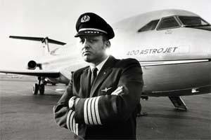
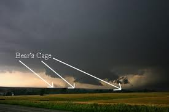

The Most Interesting Man in the World….
We have all seen those Dos Equis’ commercials with “The Most Interesting Man in the World.” If for some reason you’ve been living on another planet, here is a quick compilation to bring you up to speed: One of my personal favorite lines is, “If he punched you in the face, you’d have to fight the urge to thank him.” That pretty much sums it up. The commercials are a fantastic joke machine and the people who write for them are truly the interesting people. The guy who plays “The Most Interesting Man” is an actor and it’s all fictitious. Or is it? I actually had the privilege of recently flying with the REAL “Most Interesting Man in the World.” His name is Sergey.As an airline pilot, I rarely fly with the same person twice. So my first interaction with the guy I am flying with is usually rife with small talk, “Where are you from?”; “Are you married?”; “How many kids do you have?”; etc. To be honest, a lot of people don’t like talking about themselves; the stories are not that interesting; the talk dies out quick and we go to reading our books or looking at our iPads (that’s right, we don’t always have our eyes on the controls.) This week was different though. From the moment I heard the Captain say, “I’m Sergey, nice to meet you,” in a thick Russian accent, I knew this man would have a different story.
Live Your Life Like An Airline Captain
Editor’s note: Last year I posted a blog about this time, on how I was going to do better about posting blogs “this year”. That ended up being the only post of the entire year. Wow. This year I decided to get a little help. I’ve asked Captain Mitch Turpine to do a guest blog. I fly with him often. I am not going to lie, he is a bit of a blowhard and thinks a lot of himself. He annoys the Hell out of me but I think deep down inside he has a good heart (I am giving him the benefit of the doubt). To be honest I really want to see him fail at something. In his mind he has never done anything wrong. Not a big self-reflector. He read through some of my old blogs and just said, “Too long. Boring. And let me show you how its’ done.” I hope return soon if he doesn’t takeover. Which is a possibility.Hey loyal readers of Marc, all one of you, Mitch here. If you’re like me, you may have read one or half of one of Marc’s blogs and thought, “What the Hell is this s#!%? Do any of these have a point?” In the age of the smartphone, when there is always something more entertaining than reading at your fingertips; why would you waste your time wading through some non-linear garbage with no actionable information. Besides some mildly amusing picture captions and movie references, I found nothing of any use here. I thought I’d help the poor kid out and do his job for him (pretty much just like when I fly with that guy. I am not lying. It’s like single pilot operations when he’s my copilot. I’ve gotten used to it, “No that’s okay Marc. I’ll fly the airplane and talk on the radios and do everything you are getting paid to do. Sit there and scribble funny thoughts in your notebook.”) Buckle up you short-attention span, Adderall-addicted youth of today, I am going to give you some information on how to live a better life. Don’t worry, Call of Duty and internet porn will be there after you finish sounding out all the big words. What authority do I have to give advice on anything? I’m an airline captain. Sure they are small CRJ’s but when I walk through the airport in my uniform, other men want to be me, woman want to be with me and little children stare in awe. In short, I’m killing it in life so you should listen to what I have to say. Mitch’s Top Five Ways to Live Like An Airline Captain: Give your opinion about everything, whether you know a lot on the subject or not: Listen. There are a lot of unhappy people out there that have points of view on things, but just clam up and don’t express themselves. Not me. That stuff eats away at your insides and could give you a heart attack. If you hear people talking about a subject, any subject, interrupt their conversation and throw out some snippet of information that you heard on FOX news. If they look at you confused and say, “That’s not what we were talking about.” Say it again but louder. If that doesn’t work, point at the four bars on your shoulder and say, “Gotta go. I have an airplane to command.”
Drunk Fight!

I know a lot of people only stay in a hotel only once or twice a year. When they do stay at a hotel, it’s a special occasion like a wedding or a vacation or a girl’s night out. But nothing is worse for someone who spends half their month sleeping in hotels (me), then the drunken revelry of people who are excited to be staying in a hotel. Although there is an asterisk to my annoyance. Nothing causes me more inner conflict of joy and anger than the late night, through-the-thin-walls-of-a-shitty-hotel-room, drunk fight. Part of me loves the voyeuristic side of hearing someone else’s relationship struggles at rock concert volume. It’s like being at a Maury Povich show with only a ¼” piece of drywall as separation from the front row. The other part of me, and I am going to have to be honest, the bigger part, gets really angry because I didn’t plan to be at the Maury Povich show (ever) and would rather be sleeping (since my alarm is going off in 4 hours.) Last week, I had the not-so-rare double ticket “Maury Povich/Girl’s Gone Wild” hotel experience of “Drunk Fight/Young Drunk Girls Being Loud Just Cause” extravaganza.
Flying into the Bear’s Cage: Me and The El Reno Tornado (Sort Of)
Last week a huge tornado pummeled El Reno, Oklahoma, just west of Oklahoma City and I was there just 40 minutes before the touchdown. I know people lost their lives in the storm as well as the one less than two weeks before in Moore, Oklahoma, so it’s nothing to trivialize. (You can donate to the Red Cross Relief fund by clicking here.) I actually flew around the storm as it approached the area. I saw the dark ominous skies to the west as we sat on the ground at the Oklahoma City Airport. I saw the bubbling mammatus clouds overhead as we took off. I had no idea how close I was though to an actual EF-5 tornado.
Become the Cyborg, Not the Robot
One of my all-time favorite movies as a kid was “Robocop.” It was the first R-rated movie I was allowed to watch and it was a doozy. (Oh, for the record I am not talking about the new Robocop that came out last year, I don’t know nothing abut that shiz.) In the first ten minutes, a man is accidentally and very graphically turned into human-hamburger by the twin Gatling cannons of the flawed street protection prototype, ED-209; a cop is torturously shot apart, limb by limb by an evil drug lord; and the F-word is dropped about 1000 times.
Meth, Mormons and Guns: The Idaho Falls Story
I have talked about it before that there is nothing worse than being up at 5 A.M. I honestly think instead of legislation for daylight savings time, they should just legally remove anything on the clock before 7 am. Recently though on an overnight in Idaho Falls, Idaho, I found something worse than being awake and at 5 AM, which is forced-listening to gun-control rhetoric at five AM. First a little needed background about Idaho Falls. If you haven’t been there, you really should go. It’s a beautiful quaint little town on the west side of the Tetons and Yellowstone. There is a crystal-clear river running through the middle of town. From an airplane at ten-thousand feet, it looks like a throw-back of Americana that you see in old movies, that may or may never have actually existed. The houses are in cute little rows, with manicured lawns. The dads hunt and fish with their sons (you can see them bonding with their fly rods even from the sky). There are t-ball games going on around the clock while moms bake fresh fruit pie (you can’t see them but you can smell them from the air). There are lots of people experimenting with meth out of boredom (you can’t actually tell that from the air, you have to get down on the ground see the missing teeth.)